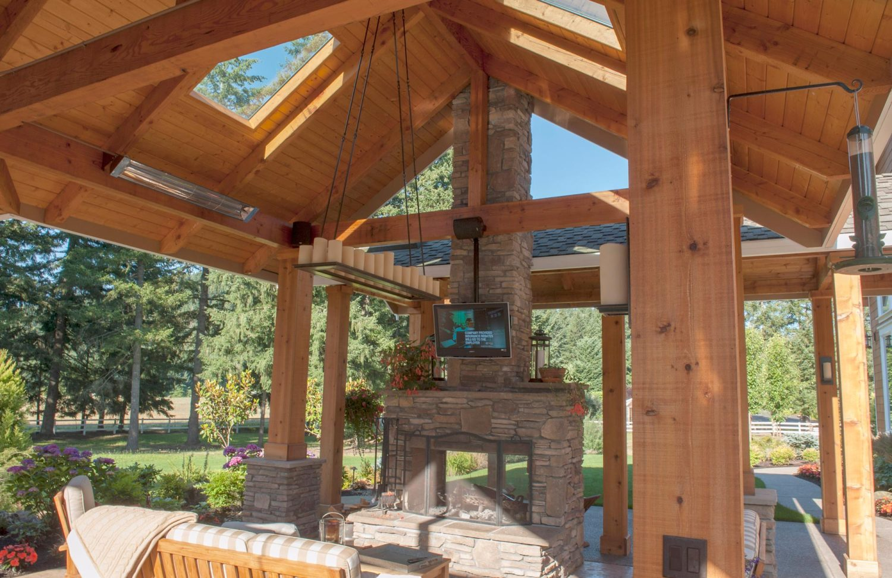
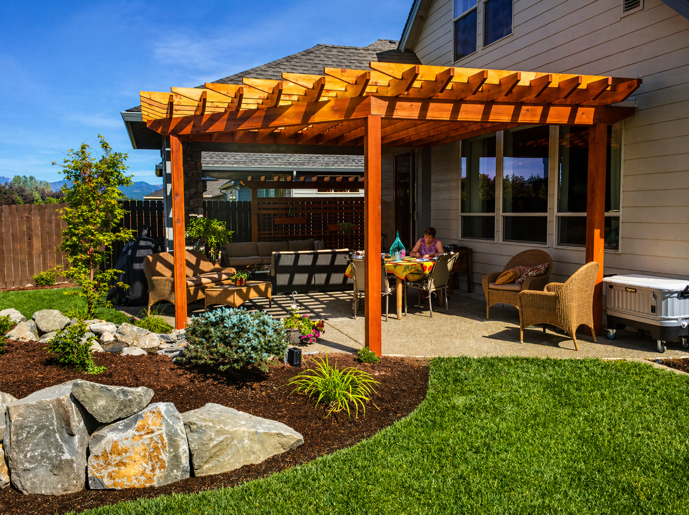
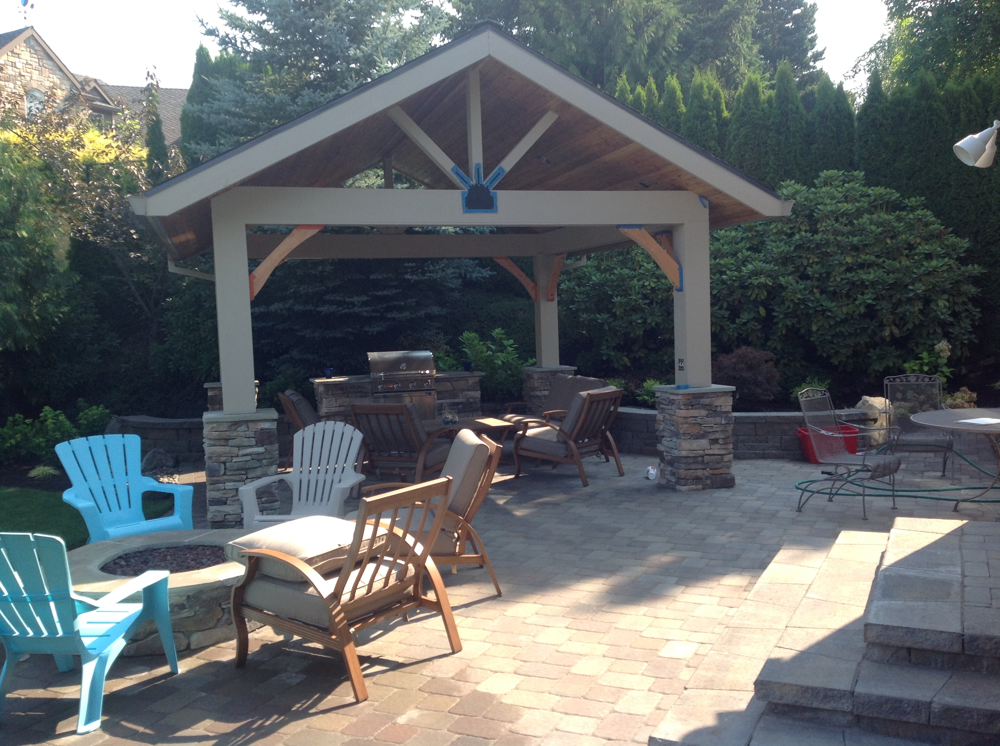

Fire pits, kitchens, pergolas, and more — outdoor rooms built around the way you entertain and relax.
West Linn's hillside properties and wooded lots create unique opportunities for outdoor living — elevated decks with views, terraced seating areas, and covered outdoor rooms that take advantage of the natural setting. We design spaces that work with the terrain rather than fighting it.
Our team has built fire pits, pergolas, outdoor kitchens, and full entertainment spaces across West Linn, and we know how to navigate sloped sites, drainage challenges, and the design expectations that come with this part of the metro.
Every project begins with a free site visit and a conversation about how you want to use the space. From there we develop a custom plan, source quality materials, and build with our own in-house crew — no subcontractors, ever.
Get a Free Estimate
Custom stone fire pits, gas fire bowls, and seating walls — designed as a focal point and gathering place for your outdoor space.

Full outdoor cooking stations with built-in grills, countertops, refrigeration, and storage — everything you need to cook and host outside.

Cedar and steel pergolas, arbors, and shade sails that create comfortable outdoor rooms — with or without lattice, curtains, or string lights.

Natural stone and concrete seating walls that double as garden borders — adding structure and extra seating without consuming more yard space.

Weatherproof TV mounts, speaker systems, and conduit runs installed alongside hardscape so everything is flush, clean, and ready to use.

Natural gas and propane overhead heaters and radiant heating systems to extend the season on your patio well into Oregon's rainy months.




Covered outdoor spaces are very popular in West Linn because the hilltop and wooded locations get weather that an open patio doesn't handle well. A properly covered space with heating makes the outdoor living area usable almost year-round.
West Linn requires building permits for pergolas, covered patios, outdoor kitchens, and other structures. We manage the permit process as part of every outdoor living project so construction proceeds without bureaucratic delays.
Absolutely — many West Linn properties have sightlines toward the Willamette, and outdoor living spaces designed around those views become the signature feature of the property. We orient structures, seating, and planting to frame and maximize those sight lines.